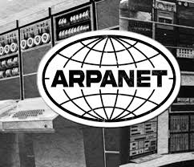
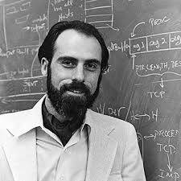

Explore what the Internet is, how it was conceived, and how it was created.
The Internet is the network used to access the files on the World Wide Web. The files are from many different globally connected computers and devices, and the exchange of information and communication allows access to the system of linked pages, programs, and files on the World Wide Web. Today, the Internet has become an essential part of life, enabling access to services like email, social media, websites, and much more. The Internet uses a set of protocols that allow devices to communicate and share data across various networks and platforms.
The idea of a global network can be traced back to the 1960s. The U.S. Department of Defense's Advanced Research Agency Network (ARPANET) funded the development of engineer Paul Baran's idea. He wanted to figure out how to build a communication system that could survive a nuclear attack. That communication system was transformed into a distributed packet - switched network.
In the early 1970s, Bob Kahn and Vint Cerf began working on that network design (the Internet). They developed the Transmission Control Protocol (TCP) and Internet Protocol (IP), which became the foundation for the Internet. These protocols allowed different networks to communicate with each other, enabling the expansion of ARPANET into a global system.
LEFT: Bob Kahn. RIGHT: Vint Cerf.
After the creation of the Domain Name System (DNS) and the World Wide Web, the Internet began to expand beyond academic and government use in the 1990s. By the late 1990s, the Internet became widely accessible to the public, and Internet Service Providers (ISPs) began offering access to the general population.